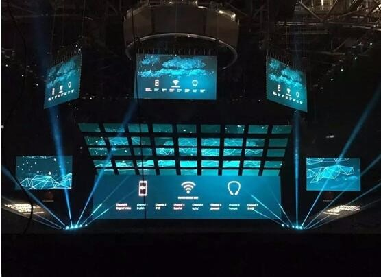
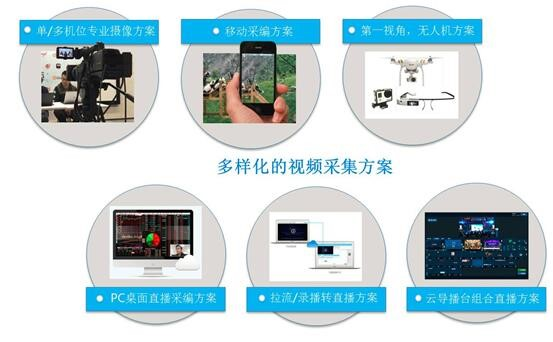
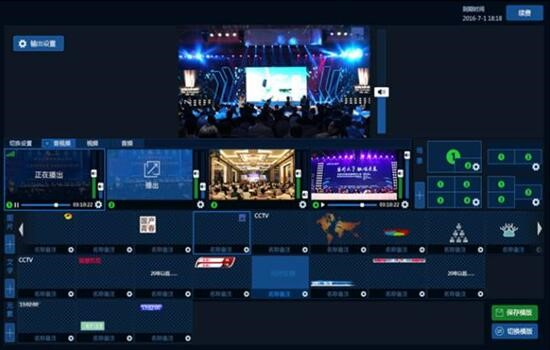

网络直播时代到来，企业如何把握红利？
-
 媒体报道
媒体报道
- 2017-08-09
媒体报道
几年前，微博、微信兴起时，营销界迎来了一场革命，广告公关从业者三句不离“社交媒体”。如今，微博、微信等社交平台也已被过度消费，秀场式、娱乐型的网络直播又成为了新的宠儿，特别是其强烈的现场体验感和互动感，越来越受企业主欢迎。
直播会是下一个企业营销的主战场吗?它的优势又在哪里?企业主如何把握直播时代红利?这些困惑随之而来，需要时间也需要实践去印证。
企业直播未来可期或成各行各业“标配”
2016年，企业直播迎来的一波高峰，各种新品发布会、新闻发布会、见面会、交流会此起彼伏，小米、华为、魅族、锤子等手机厂商纷纷利用直播展现新产品，令粉丝翘首以盼，吃瓜群众自发围观，并迅速开启二次传播，引发舆论热点，这是无数企业梦寐以求的传播效果。
直播无疑是当下最丰富、最有力的表达方式，不少业内人士也更看好直播的前景，认为未来每个企业可能都会有一个专属的“直播间”，解决企业营销中的“流量”问题。
然而，目前市面上绝大多数的网络直播平台都是为“个人娱乐”而设计的，与企业级用户的实际需求还有一定差异，企业直播需要更高的技术保障及更全面的解决方案。
把握直播红利打造企业专属直播平台
由于企业事件不同，所需要的直播场景也就不同，因此一个为企业所拥有、支配的专属直播平台，成为把握直播红利的基本保障。基于此，会畅通讯专为企业级用户打造出一款全球领先的直播互动平台，让高规格的线上直播活动成为可能。
会畅通讯网络直播平台可以根据客户的具体需求，定制客户专属系统，让营销活动也呈现更加多样化的形式，达到更好的传播效果。
自助直播与专业直播，双重服务模式。自助直播，用户通过桌面或手机直播工具可随时随地开启直播。专业直播，平台从摄影采集、软硬件编码、导播控制、传输分发、监控数据等环节提供标准化服务。
全网多样化互动，开启极速传播。会畅网络直播平台提供微信端分享互动、公众号嵌入、一键发布微博及官网、h5页面嵌入等功能，并支持向腾讯视频、优酷土豆等第三方视频网站同步推流，实现全网互动参与。
全程把控，专业级制作与保障。会畅拥有强大的直播控制台、云导播台、智能语音实时字幕、绿幕抠像等业内领先技术，并且云服务器能够进行动态扩容，实现观看无上限。
定制服务，打造企业专属频道。通过会畅通讯网络直播平台，企业可以定制域名，定制产品品牌，自定义开放接口，低成本创建企业专属的“私有电视台”。
这种高度符合企业直播发展前景的解决方案，已在实际应用中获得良好反响。2016全联机大会，是一场面向ICT行业的全球生态大会，超过20000名业界精英为了迎接智能社会，共谋行业发展大计从而齐聚上海。会畅通讯对大会全程进行了高清直播，并且首次采用了Webinar直播与官网对接、直播界面设计及功能定制开发的形式，同时还实现了从梅赛德斯奔驰中心到世博中心会场30多个大屏的同步内网高清转播。
成熟的“云”平台服务 满足企业不同深度的需求
企业直播不仅仅局限于满足品牌宣传、市场推广等基本需求，还需要满足客户管理、内部培训等更深层次的需求，因此，这也对一个直播平台的服务提出了更高要求。
会畅通讯拥有11年成熟的平台服务经验，坚持自主创新，致力满足企业不同深度的需求，尤其是借助近年来云技术的发展风潮，会畅通讯网络直播平台也有一抹独特的“云”色彩。
多样化视频采集方案。涵盖单/多机位专业摄像方案、移动采编方案、第一视角、无人机方案、PC桌面直播采编方案、拉流/录播转直播方案、云导播台组合直播方案，从各个视角还原直播现场盛况，并自由切播。
视频云点播、云管理技术。支持视频实时存储云媒体库，方便回看、点播取用;外部视频可上传，并嵌入频道点播;支持视频剪辑、合并与自动编码。
此外，企业主还能够进行实时数据分析，如观看用户地域分布、观看方式、观看设备、观看来源、观看人数等，还能对用户进行维护与管理。这些无不在说明，直播不再是单纯的沟通媒介，已上升到与企业决策、品牌建设息息相关。
在互联网助力企业营销的流量时代，巨大的蓝海市场让各行各业都嗅到了时机，纷纷把握直播红利占领行业高地。会畅通讯网络直播平台，以成熟的服务水准和领先的技术保障，助力企业成功建立专属直播互动平台，把握直播时代红利，实现新机遇下的华丽转型!